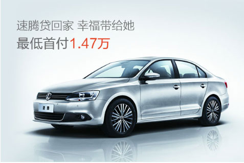

新闻来源：2018-10-30网易新闻 发布时间:00:11:00 作者：毛毛豆豆雨 参与评论400人
二手车行业领军者!没有中间商赚差价，更多的个人买家，瓜子二手车直卖网，为广大车主提供免费上门评估，二手车帮卖，代办过户等服务，专业评估师团队，整车全面检测，30天可退瓜子全程陪同交易！买卖二手车请拨打——————400-069-6530。

目前，瓜子二手直买网已与超过20个汽车品牌商建立合作，覆盖46个主流车型。并在长春、石家庄、成都、东莞、南京5个城市建立了线下中心仓 服务覆盖线下全国33个主流城市。瓜子二手车通过与汽车主机厂商、经销商无中间环节合作,拿到一手优质车源,为消费者低首付融资租赁的新型用车、购车服务。 与传统汽车贷款服务相比,毛豆新车网有首付低、月供低、门槛低获贷快、省心省力四大特点。
毛豆新车网致力于将始终致力于大数据、人工智能等先进技术手段,对汽车生产、流通与销售过程不断改进升级,重塑业态结构与生态圈,全力打造汽车领域线上服务+线下体验深度融合。
我爱<guazi>我爱<car> 地址：北京市顺义区
注册商标©注册符号®